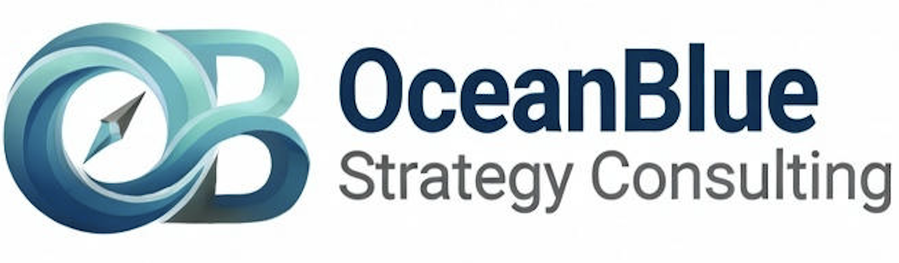

Ocean Blue Strategy Consulting (OceanBlue-SC) designs modern, data‑driven go‑to‑market strategies that deliver measurable, sustainable growth across all stages and segments.
Book a Consultation
Modern and Differentiated B2B GTM Framework
Development Experts
Product market fit (PMF)
Build market share and growth
Reduction of customer acquisition costs (CAC)
Develop high-quality retention methods
Define and optimize the most effective channels (Direct, Partner, Digital, Multi-Channel)
Design efficient processes
Sales enablement
Sales methodology education
Metrics / KPIs (CAC, CLV, MRR, ARR, Churn, Cycles, Win Rates, PMF profiling...)
Ocean Blue Strategy Consulting is a GTM consulting partner for the modern global marketplace.
We support companies at every stage—from early stage to enterprise expansion across regions and segments.
Our modern, impact‑driven GTM strategies deliver measurable, sustainable growth.
Our 8 Stage Process:
Stage 1 – Discovery Stage 2 – Analysis Stage 3 – Strategy Development Stage 4 – Presentation Stage 5 – Refinement Stage 6 – Implementation Stage 7 – Measurement Stage 8 – Optimization